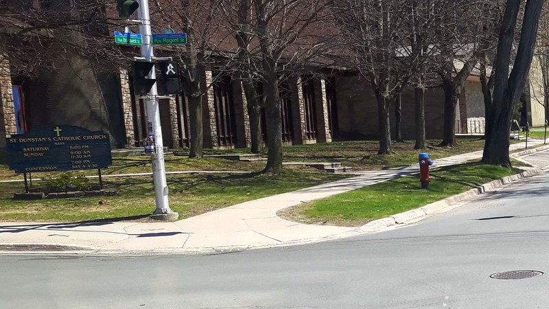

Tovuti ya parokia ni mali ya parokia.
Parokia 13 katika nchi nne, muundo mmoja wa kubuni, lugha tisa. Zinahifadhiwa hapa hapa. Hakuna ufuatiliaji. Hakuna matangazo. Hakuna wanyonyaji wa watu wa tatu. Kila senti inabaki katika jumuiya.
Chagua parokia ili uingie kwenye tovuti yake. Kila tovuti ya parokia inashiriki muundo uleule wa EVE Glyph Design, hivyo uongozaji na maandishi vinabaki vinavyofahamika. Tovuti rasmi ya kila parokia inabaki chanzo cha ukweli — hii ni nakala iliyoandaliwa kwa uangalifu, tayari kukabidhiwa kwa mtaalamu wa kompyuta wa hiari wa parokia aliyepo tayari, wakati wowote atakapoitaka.
Marekani
Lenexa, Kansas na St. Augustine, Florida.


Holy Trinity — Lenexa
Lenexa, Kansas · 13615 West 92nd Street
Parokia ya nyumbani ya Baraza la Palms #6673 la Knights of Columbus.
Ilianzishwa 1979 · Archidioecesis ya Kansas City huko Kansas · Baraza la Palms #6673, Knights of Columbus


Cathedral Basilica of St. Augustine
St. Augustine, Florida · 38 Cathedral Place
Jumuiya ya Kikatoliki ya zamani zaidi katika bara la Marekani. Misa imekuwa ikiadhimishwa hapa tangu mwaka 1565.
Jumuiya 1565 · Kanisa la sasa 1793–1797 · Basilika ndogo 1976 · Dioecesis ya Sancti Augustini


Atlantic Canada
New Brunswick, Prince Edward Island, Nova Scotia.


St. Dunstan's — Fredericton
Fredericton, New Brunswick · 120 Regent Street
Parokia mwanzilishi wa Fredericton ya Kikatoliki, na kanisa kuu la kwanza la New Brunswick.
Padri mkazi 1827 · Kanisa kuu la kwanza la New Brunswick 1843 · Kanisa la sasa 1965 · Dioecesis ya Saint John


Sainte-Anne-des-Pays-Bas
Fredericton, Nouveau-Brunswick · 715 rue Priestman
Parokia ya Kifaransa iliyoanzishwa mwaka 1981. Nakala isiyo rasmi chini ya mafundisho ya EVE Glyph.
Parokia ilianzishwa 1981 · Kanisa 2001 · Archidioecesis ya Moncton


Saint-Augustin de Paquetville
Paquetville, Nouveau-Brunswick · 3585, rue Principale
Parokia ya Kiakadi ya kijiji cha Paquetville, urithi wa familia ya Thériault.


St. Dunstan's Basilica
Charlottetown, Prince Edward Island · 65 Great George Street
Kanisa mama la Dioecesis ya Charlottetown. Lilianzishwa mwaka 1816.
Parokia 1816 · Kanisa kuu 1829 · Moto 1913 · Kanisa la sasa 1919 · Basilika 1929 · Eneo la Kihistoria la Kitaifa 1990


Saint Catherine of Siena
Halifax, Nova Scotia · 6476 Bayers Road
Makazi ya Franciscans of Halifax. Ikihudumia eneo la Magharibi la Halifax tangu mwaka 1948.


St. Mary's Cathedral Basilica
Halifax, Nova Scotia · 5221 Spring Garden Road
Kanisa mama la Archidioecesis ya Halifax-Yarmouth. Mtindo wa Gothic Redivivo, Eneo la Kihistoria la Kitaifa la Kanada.
México
Bahía de Banderas, Nayarit — pwani ya bandari za mashua.

Sagrada Familia — Nuevo Vallarta
Las Jarretaderas, Nayarit · J. María Morelos e Independencia
Parokia ya kijiji cha Las Jarretaderas, kwenye lango la kuingia Nuevo Vallarta, bandari ya mashua na ukanda wa hospitali.
Kama-parokia · Dioecesis ya Tepic · Decanatus ya Bahía de Banderas
Paradise Village — Nuevo Vallarta
Nuevo Vallarta, Nayarit · Paradise Plaza, Paseo de los Cocoteros
Misa ya Jumapili inayoadhimishwa kwa lugha ya Kiingereza ndani ya Paradise Plaza huko Nuevo Vallarta, kwa ajili ya watu wa eneo la bandari ya mashua.
Misa ya Jumapili inayoendelea kudumu, si parokia iliyoanzishwa kikanuni · Diócesis de Tepic · Decanato Bahía de Banderas

La Santa Cruz — La Cruz de Huanacaxtle
La Cruz de Huanacaxtle, Nayarit · Calle Marlín 38
Parokia ya kijiji cha wavuvi cha Nayarit kilichogeuzwa kuwa bandari ya mashua, karibu na Marina Riviera Nayarit.
Dioecesis ya Tepic · Decanatus ya Bahía de Banderas
Ελλάδα · Greece
Nafplio, Argolis — mji mkuu wa kwanza, na kanisa linalotunza majina ya Wafilelene.


Daftari la Hisani
Kumbukumbu endelevu ya yale ambayo watu tayari wanafanya hapa — ununuzi, saa ya msaada, huduma kutoka kwa mtu mwenye ujuzi fulani — ili yajumlike mahali fulani na parokia iweze kuyaona.
- Nunua kupitia msimbo wa parokia, na akiba inayopatikana inaifikia parokia.
- Saa ya msaada, ikithibitishwa na shahidi mmoja, inaandikwa kwenye daftari.
- Mtu mwenye ujuzi — fundi bomba, mhasibu, muuguzi — anaweza kutoa saa yake kwa bei yake halisi.
- Ukurasa mmoja, parokia nzima inaweza kuusoma.
Hiki ni nini
Parokia 13 za Kikatoliki, kila moja ikiwa na tovuti iliyoakisiwa chini ya kiolezo kimoja cha uhariri. Kichwa kimoja, chini kimoja, uongozaji mmoja — lakini kila parokia inabaki na nembo yake, saa za Misa, taarifa za mawasiliano na kiungo cha jimbo lake. Kama parokia tayari ina mtaalamu wa kompyuta wa hiari, hii si mbadala; ni chaguo ambalo wanaweza kulichunguza, kulinakili, au kulipuuza.
Inahifadhiwa hapa hapa
Tovuti tuli kwenye GitHub Pages au kwenye uhifadhi wa parokia yenyewe. Hakuna dashibodi za watu wa tatu, hakuna kufungwa kwa muuzaji mmoja.
Hakuna ufuatiliaji
Hakuna vidakuzi. Hakuna uchambuzi. Hakuna hati za watu wa tatu isipokuwa Google Fonts. Imewekwa alama ya noindex, nofollow mpaka parokia iidhinishe uchapishaji.
Umiliki kamili wa kiparokia
Parokia inamiliki maudhui yake, jina lake la kikoa, na njia yake ya kutoka. Nakili hazina ya msimbo, ipeleke nyumbani, na endelea.
Muundo thabiti
Muundo wa pamoja wa EVE Glyph Design, ili waumini wanaposogea kati ya tovuti za parokia wajisikie wako nyumbani.
Lugha tisa, msingi mmoja
Sehemu hii si Kiingereza chenye tafsiri zilizobandikwa. Kila maandishi kwanza hupelekwa kwenye msingi mmoja wa Kilatini, na kila lugha nyingine inatolewa kutoka msingi huo. Kilatini ndicho mhimili kwa sababu ni lugha ambayo Kanisa tayari linaishiriki kwa pamoja, na kwa sababu mhimili unamaanisha hakuna lugha hai inayotawaliwa na lugha nyingine hai.
Kilatini, Kiingereza, Kifaransa, Kihispania, Kiitaliano, Kireno, Kiromania, Kigiriki na Kiswahili. Kigiriki kinatolewa kutoka msingi wa Kilatini kama lugha nyingine yoyote. Kiswahili kipo hapa kwa sababu jukwaa hili limekusudiwa kwa watu wote, si matajiri tu — mtu anapaswa kuweza kumwonyesha mama yake na dada yake jambo hili kwa lugha wanayofikiri kwayo kikweli, na kueleweka.
Majina sahihi, anwani za mitaa, namba za simu na saa hazitafsiriwi kamwe. Zinaonyeshwa kama vile parokia inavyozichapisha, katika kila lugha.
Kwa Ajili ya Equites a Columbo
Hivi ndivyo ukuaji ndani ya wiki moja unavyoonekana — bila kuudhi mtu yeyote.
Kama Equites wanataka kufanya uwepo wa mtandaoni wa parokia kuwa sawa katika jimbo lote, kiolezo hiki kinaweza kuanzisha tovuti mpya ya parokia ndani ya saa moja hivi. Lakini hilo si linalotolewa. Kinachotolewa ni chaguo:
- Mtaalamu wa kompyuta wa hiari aliyepo anabaki mahali pake. Kama Ndugu Eques au mwumini tayari anaendesha tovuti ya parokia, hakuna kinachovurugika. Jukwaa hili lipo tayari kama watataka kubadili au kunakili; vinginevyo linabaki kando ya kazi yao iliyopo kama rejea.
- Fedha inabaki katika parokia. Hakuna ankara za mwaka za uhifadhi, hakuna usajili wa tovuti, hakuna gharama za matangazo. Uhifadhi tuli ni bure, na kila senti ambayo parokia inaokoa inabaki katika jumuiya.
- Waumini wanabaki salama. Hakuna ufuatiliaji, hakuna mitiririko iliyoundwa kuvuta hisia, hakuna kuonyeshwa kwa algoriti kwa watoto, wanawake au watu walio hatarini. Tovuti ya parokia ni tovuti ya parokia — si sehemu ya kunyonya taarifa kwa ajili ya jukwaa la mbali.
- Equites wanabaki na mamlaka. Umiliki, mafundisho na haki ya kutoka ni mali ya parokia na Baraza lake. Muundo wa kubuni ni rejea ya pamoja, si mkataba na muuzaji.
Council of Palms #6673 (Holy Trinity, Lenexa) ndicho baraza rejea la ujenzi huu.
Mafundisho
Hakuna uwekaji wa kumbukumbu za watu
Hakuna mwumini anayehesabiwa, kuainishwa au kulengwa na jukwaa hili. Kamwe.
Usalama kwanza, uboreshaji baadaye
Usalama wa maudhui na utambulisho unatangulia kabla ya ukuaji, mwingiliano au faida.
Heshima kwa mwanzilishi
Mwanzilishi wa muundo: Donat Omer Thériault, EVE Glyph Design. Heshima hii haiwezi kubatilishwa.
Enzi ya kiparokia
Parokia inafunga jukwaa, inapokea risiti ya utawala, na inaweza kutoka wakati wowote ikiwa na hamisho kamili la maudhui yake.
Maelezo ya ziada — na Waakadi walikuwa akina nani hasa?
Hapa chini, kwa sababu ni maelezo ya ziada, si njia ya mauzo.
Kabla ya parokia zote zilizotajwa hapo juu, kulikuwa na moja huko Port-Royal, katika kile ambacho sasa ni Nova Scotia: Saint-Jean-Baptiste, iliyoanzishwa mwaka 1613. Ndugu Wakapuchini waliongoza misheni hiyo tangu mwaka 1632. Ndiyo parokia ya kwanza ya Kikatoliki katika kile ambacho baadaye kikawa Kanada.
Kisha nyaraka nyingi zikakoma kuwepo. Mwaka 1654 jeshi la New England, likiongozwa na Robert Sedgwick, liliuteka Port-Royal, likamuua kiongozi Mkapuchini Léonard de Chartres na kuwafukuza ndugu zake — kinyume na masharti ya makubaliano ya kujisalimisha waliyokuwa wametia saini hivi karibuni. Madaftari mawili yamesalia: ya mwaka 1702–1728 na ya mwaka 1727–1755, ambayo sasa yapo katika Centre acadien ya Université Sainte-Anne. Kila kitu kabla ya 1702 kimepotea.
Kadi ya Kigiriki iliyotajwa hapo juu ni nusu nyingine ya wazo lilelile. Huko Nafplio, mnara wa mbao ulioinuliwa mwaka 1841 unabeba majina ya wageni wapatao 280 waliokufa kwa ajili ya nchi ya mtu mwingine, kila mmoja akiwa na mahali alipoanguka kimeandikwa kando yake. Mtu fulani aliamua majina hayo yanastahili kuhifadhiwa. Huko Port-Royal, mtu fulani aliamua yetu hayakustahili.
Watu huuliza kama Roma ilihifadhi nakala. Roma inashughulikia utawala, si sakramenti — hakuna daftari kuu la ubatizo katika Vatikani. Ubatizo unaandikwa katika parokia, na hilo ndilo mwisho. Parokia ikiungua, hapo ndipo mwisho wake.
Seti moja hata hivyo ilisafiri. Madaftari ya Saint-Charles-des-Mines kutoka Grand-Pré yalisafiri pamoja na Waakadi waliohamishwa kwenda Maryland, kisha Louisiana, na yalikabidhiwa kwa padri huko Fort San Gabriel mwaka 1767. Leo yapo katika hifadhi za Dioecesis ya Baton Rouge.
Na hapana, hii si dai kwamba sisi ndio kitu cha kale zaidi cha Kikatoliki katika Amerika ya Kaskazini. St. Augustine, Florida ina mwaka 1565 — ndiyo kadi ya pili juu ya ukurasa huu. San Miguel Chapel huko Santa Fe ni ya karibu mwaka 1610. Port-Royal ni ile tu ya kwanza iliyo yetu, na ile ambayo nyaraka zake ziliungua.